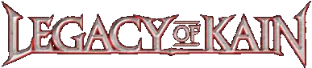
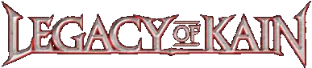

Legacy of Kain is a series of games famous for its shakespearian writing, gothic atmosphere and dark topics. It is beloved by fan all over the world. Today, it is far from mainstream, but many still remember the games and replay them over and over, discovering something new on each playthrough.
Not too long ago, fans discovered alpha version of the first Soul Reaver game, marking the start of their on uncovering everything that was unknown about initial script and concepts. More on than you may find on Raina Audron youtube channel or The Lost Worlds website.
Given the choice – whether to rule a corrupt and failing empire or to challenge the Fates for another throw, a better throw, against one's destiny – what was a king to do?
Surprisingly, the latest game in the series to be released was the very first one. So, if you want to show the publishers that you are still interested in the series, I encourage you to go and buy it. Just click the Blood Omen cover art above and it'll take you to the GOG product page.
In fact, I suggest that you buy the whole series. It definately won't hurt anyone, especially now that there are new right owners.
If you are not new to the series, you may know that it wasn't finished. This is why it is so important to show them that we still need the last game.
The first, bitter taste of that terrible illusion: hope.